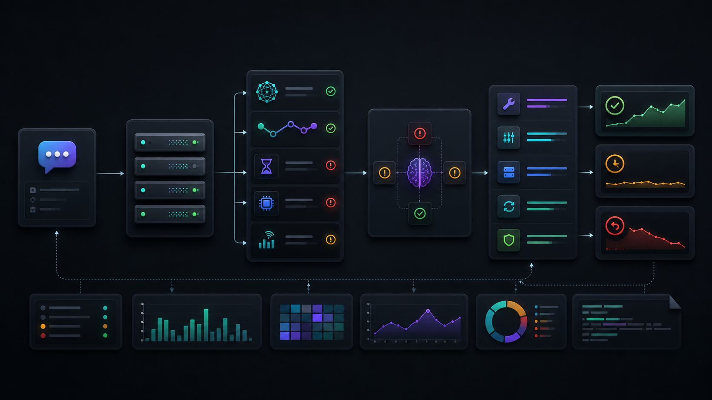

RPC Health
Slot lag, stale reads, rate limits, send degradation, provider failover.
Solana Ops Skill helps agents diagnose RPC issues, transaction landing failures, blockhash expiry, priority fee/CU tuning, confirmation drift, websocket/indexer gaps, and incident readiness with evidence before advice.
When a live Solana app fails, the first explanation is often wrong. A payment can show a signature while the backend marks it failed. A simulated transaction may never land. A websocket listener can miss updates while the RPC endpoint looks healthy. This skill gives agents a disciplined way to separate those causes.
The entry point routes agents to the smallest relevant context, then forces a concrete diagnosis shape: finding, evidence, fix, verification, rollback, and open questions.

skill/SKILL.md into RPC, transaction, fee/CU,
confirmation, websocket, or incident references.
The skill avoids one giant context dump. Agents load focused references according to the incident they are handling.
Slot lag, stale reads, rate limits, send degradation, provider failover.
Blockhash expiry, dropped signatures, simulation mismatch, confirmation loops.
Compute limits, fee ceilings, congestion, account contention, cost guardrails.
Disconnect recovery, missed notifications, cursor replay, reconciliation drift.
Severity, mitigation, communication, postmortems, and corrective actions.
Production SLOs, validation checks, observability signals, and safety limits.
The repository includes the skill, docs, examples, tests, CI, demo, and a direct PR to the public skill bounty repository.
$ npm test
Validation passed: 23 markdown files checked.
$ npm run lint:shell
bash -n install.sh
$ gh pr view 5
state: OPEN
mergeable: MERGEABLEMIT licensed, no hidden executables, no private-key handling, no postinstall behavior, and a clean progressive skill structure.
Open GitHub repo